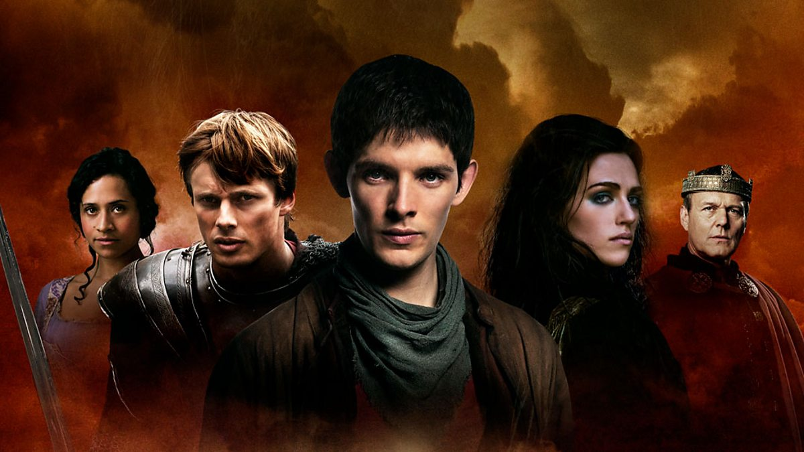

About Merlin
merlin is a British fantasy-adventure drama television programme starring Bradley James as Prince Arthur and Colin Morgan as Merlin. It was broadcast on BBC One from 20 September 2008 to 24 December 2012 for a total of 65 episodes.
Merlin the magician
Features of Merlin
- He has magic powers
- He hides his powers from the people because magic is forbidden in camelot
- He is the servant and direct Personal Assistant of Authur the prince of camelot
- He is very funny